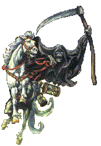
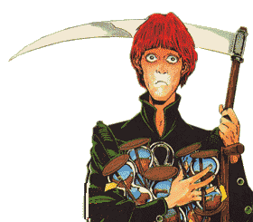

|
|
La MortDeath | |
Le Défenseur d'Empires, le Voleur d'Années, la Réalité Suprême, la Moissonneuse d'Humanité, l'Assassin contre qui Aucune Serrure Ne tiendra, le seul ami du pauvre et le meilleur docteur pour le mortellement blessé. Une personnification anthropomorphique. Vous avez sûrement déjà dû en entendre parler: un grand type habillé tout en noir, un peu maigrichon (en fait, le terme approprié est Squelettique, très approprié, même). Il (oui..."Il ") est assez vieux ( lui-même ne se souvient plus de son âge) et très aimable quand on le connais bien. Il ressemble à un squelette d'os polis de 7 pieds de haut, dans ces orbites il y a les points minuscules de lumière (d'habitude bleu). Il porte normalement une robe de chambre apparemment tissée d'obscurité absolue - et parfois aussi un manteau attaché avec une broche d'argent portant son propre monogramme personnel, l'Oméga Infini. La faux de la Mort semble assez normale, à part la lame, qui est si mince vous pouvez voir par cela - un pâle bleu miroitant qui pourrait trancher, et tranche, le son. Son épée a la même lame bleu glacier, fantôme-mince, de la finesse extrême nécessaire pour séparer le corps de l'âme. Son visage, nécessairement, est gelé dans un sourire de crâne. Sa voix est sentie plutôt qu'entendue. Selon lui, quelqu'un qui n'aime pas les chats ne peut être que mauvais. Seuls les chats, les professionnels de la magie et de ceux qui sont sur le point de mourir ou qui sont déjà morts sont capables de le voir - bien qu'il y ait quelques exemples qu'il puisse être entrevu par ceux qui sont dans un état intensifié de conscience. Quand il a besoin de communiquer avec la vie (c'est-à-dire ceux qui vont continuer à vivre) il est perçu très vaguement par eux dans quelque forme qui ne les dérange pas. A une période où il a fait l'effort d'apparaître sous une forme attendue par le client (des scarabées, des dragons noirs, etc.).Il a fini par abandonner parce qu'il était généralement impossible de déterminer ce que le client attendait tant qu'il n'était pas mort. Il a décidé que, puisque personne ne s'est jamais vraiment attendu mourir de toute façon, il a dorénavant persévéré dans la robe de chambre familière noire. Son cheval, quoique pâle selon la spécification traditionnelle, est entièrement vivant et s'appelle Bigadin. La mort a une fois essayé un cheval squelettique après l'observation d'une gravure sur bois de lui - il est facilement sous l'influence de cela - mais il devait continuellement faire attention à ne pas en semer des morceaux derrière lui. Le coursier ardent qu'il a essayé ensuite mit le feu aux écuries. Malgré la rumeur, il n'est pas cruel. Il est juste terriblement, terriblement bon dans son travail. Il est dit qu'il ne se fâche jamais, parce que la colère est une émotion et pour éprouver une émotion, vous avez besoin de glandes; cependant, il semble être capable d'une certaine désapprobation intellectuelle qui a un effet très semblable. C'est un traditionaliste qui est fier de son job et, malgré l'absence de glandes, peut devenir déprimé quand ce n'est pas apprécié. Il est en particulier fasciné par la capacité de l'humanité de compliquer une existence qui, du point de vue de la Mort, est momentané. Il semble passer beaucoup de temps à essayer d'apprendre, par la déduction logique, les choses que l'humanité considère comme allant de soi. Dans le processus, il semble avoir développé ce qui peut seulement être appelé des préférences et des sympathies - pour des chats, par exemple et le curry. La Mort a une propriété qui n'est localisable sur aucun atlas normal, dans laquelle il possède une maison et un jardin. Il n'y a aucunes couleurs sauf noir, blanc et des nuances de gris; la Mort pourrait en employer d'autres, mais ne réussit pas à voir leur signification. Et, parce qu'il manque, presque par définition, d'une quelconque capacité créatrice - il ne peut que copier ce qu'il a vu. Les choses ne vivent ou ne grandissent pas dans le sens dit "normal", à moins qu'ils ne soient apportés de l'extérieur, mais ils existent dans un apparent non-changement. Il semble tirer sa façon de "vivre " en observant les gens, mais les nuances l'échappent quelque peut. Il a une chambre à coucher, par exemple, parce que bien que la Mort ne dorme jamais, il a remarqué que les maisons ont des chambres à coucher. Il a aussi une salle de bains, bien que les montagnes de canalisation aient été fournies par un plombier d'Ankh-Morpork parce que la plomberie est parmi ces activités où les capacités constructives de la Mort se trouvent à l'étroit; il n'était pas conscient que les tuyaux étaient creux à l'intérieur, par exemple. Sur sa table de toilette il a une paire de brosses à cheveux renforcées d'argent et un petit plateau de verre pour des boutons de manchette, malgré le fait, mais c'est un détail, qu'il n'ait ni cheveux, ni manchettes. Il pense que c'est ce qu'il doit avoir. Comme pour toutes les créatures qui existent, la Mort a un sablier qui mesure la longueur de ses jours. Le sien a plusieurs fois la taille des verres normaux populaires et est noire, mince et décorée d'un motif compliqué. Il n'y a pas de sable. Il a aussi essayé de prendre un apprenti, Mortimer.Il a une fille adoptive, Ysabelle, et une petite fille, Suzanne, qui a hérité de nombreux traits de son grand-père, même si cela est génétiquement impossible. | |
|
Citations :
La Mort peut être invoquée par le Rite de AshEnte, qui requiert :
Bon...il apparaît dans la plupard des bouquins mais surtout dans : Le Faucheur, Mortimer, Accroc du Roc, Le Père Porcher . |